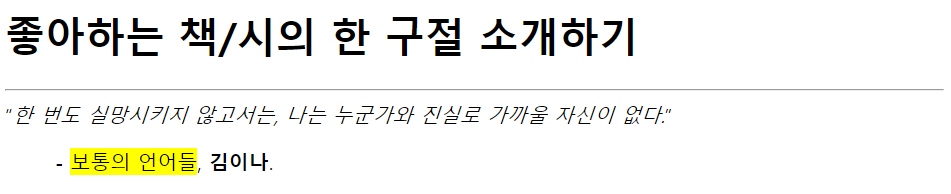

1. 진하게
글자를 진하게 (굵게) : <b></b> // 내용 강조 : <strong></strong>
2. 이탤릭
이탤릭 : <i></i> // 이탤릭으로 강조 : <em></em> // 진하게 이탤릭으로 강조 : <b><em></b></em>
3. 하이라이팅
형광펜 효과 : <mark></mark>
4. 삭제, 추가
삭제 : <del></del> // 추가 : <ins></ins>
5. 윗첨자, 아랫첨자
윗 첨자 : <sup></sup> // 아랫첨자 : <sub></sub>
6. 인용문
짧은 인용문 : q || 긴 인용문 : blockquote
-> q 는 따옴표 표시, blockquote 는 따옴표 X
7. 예제 ;
